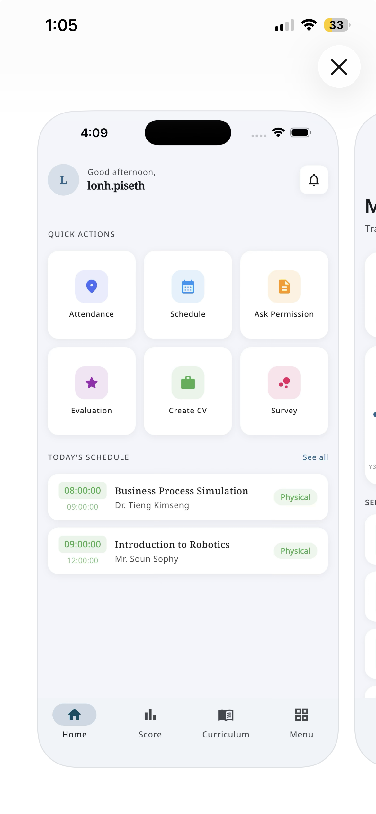
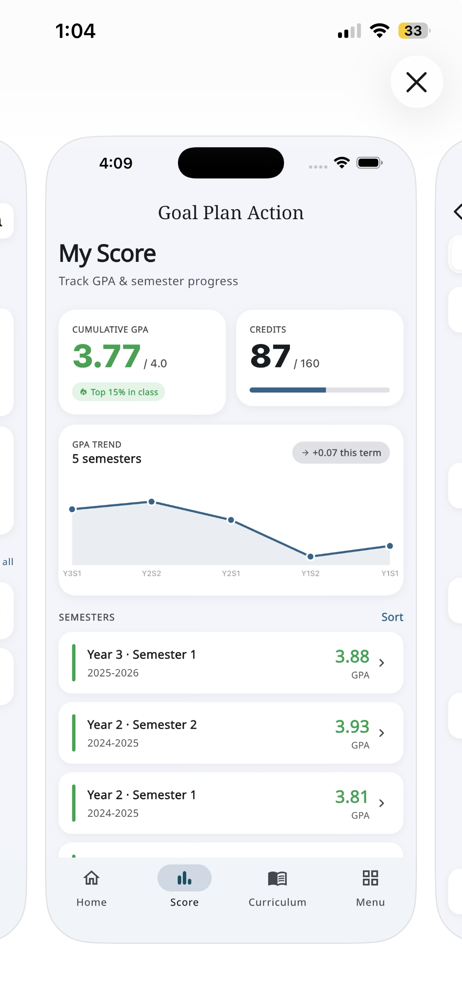

Mobile app · Daily use
SCA App
កម្មវិធីទូរស័ព្ទសម្រាប់និស្សិត និងសាស្ត្រាចារ្យ — គ្រប់មុខងារសំខាន់ក្នុងកម្មវិធីតែមួយ។
- →មុខងាររហ័ស៖ វត្តមាន កាលវិភាគ សុំច្បាប់ វាយតម្លៃ បង្កើត CV និងស្ទង់មតិ
- →តាមដានពិន្ទុ GPA ក្រេឌីត និងនិន្នាការលទ្ធផលសិក្សា តាមឆមាស
Flutter
FastAPI
Firebase